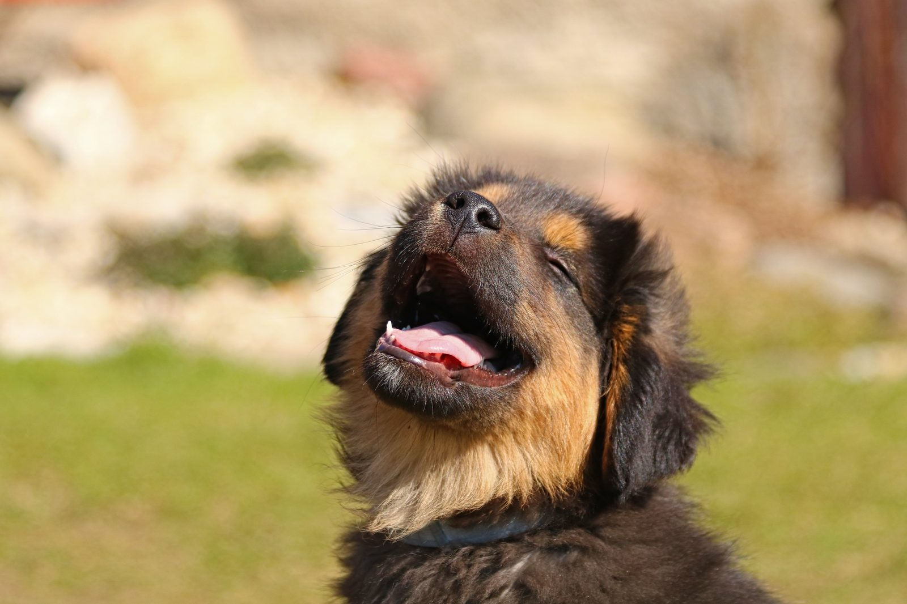

De um trabalho acadêmico a uma missão de amor e proteção animal.
O Best Buddy nasceu com o objetivo de testar nossas competências técnicas de desenvolvimento de software no Senac. Ao conhecer a dura realidade dos resgates e dos pets desaparecidos, decidimos ir além da sala de aula: manter a plataforma viva, gratuita e a serviço de quem mais precisa.

Como tudo começou no SENAC
A evolução de um exercício de aula para um propósito de vida
O Desafio do Projeto Integrador
A proposta inicial era aplicar na prática conceitos sólidos de engenharia de software ensinados no Senac: banco de dados estruturado, APIs REST, responsividade, segurança e boas práticas de UX. O tema escolhido por afinidade do grupo foi a proteção e adoção de animais.
O Contato com a Dor Real
Ao mapearmos os fluxos, percebemos que o maior obstáculo para quem resgata ou perde um animal é a falta de canais diretos e limpos. Muitas pessoas dependem de redes sociais desorganizadas onde publicações se perdem em poucas horas.
O Pacto de Continuidade
Decidimos que o Best Buddy não teria data de validade. Estamos constantemente aplicando novas melhorias (versão mobile, otimizações de performance, conformidade com a LGPD e suporte facilitado via WhatsApp) para que qualquer cidadão encontre ou adote um pet com facilidade.
Missão, Visão e Valores
O que guia cada linha de código e decisão no projeto
Nossa Missão
Conectar corações e viabilizar a adoção responsável e a rápida localização de animais perdidos por meio de tecnologia acessível, rápida e humanizada.
Nossa Visão
Ser uma plataforma comunitária de referência regional, provando que o aprendizado em sala de aula pode salvar vidas reais e transformar a sociedade.
Nossos Valores
Amor genuíno aos animais, transparência com os tutores, responsabilidade social, integridade técnica e total respeito à privacidade dos usuários (LGPD).
Quem faz o Best Buddy acontecer
Conheça os alunos do Senac responsáveis pelo planejamento, banco de dados, design, código e manutenção da plataforma.
Bruno Felipe Ferreira Boldrin
Arquitetura & EstruturaçãoDesenvolvimento e organização dos módulos centrais da aplicação.
Cristian Henrique Diniz
Integração de SistemasComunicação entre serviços, API e consistência de dados.
Eddie Victor De Andrade Pereira
Lógica & Regras de NegócioFluxos de adoção, status dos anúncios e validações de sistema.
Fernando Santos Sinoara
Qualidade & TestesPlanejamento de casos de teste, validações e suporte a tutores.
Gustavo Cruz de Almeida
Banco de Dados & UsabilidadeModelagem relacional de dados, performance e interface responsiva.
Luiz Eduardo Bonini
Frontend & ExperiênciaDesign visual, responsividade mobile e acessibilidade dos componentes.
Agradecimento Especial ao SENAC
Aos professores, instrutores e orientadores do Senac São Paulo que nos transmitiram não apenas conhecimento técnico em tecnologia, mas a inspiração ética para transformar projetos acadêmicos em benefícios reais para a sociedade.
Faça parte dessa corrente do bem!
Adotar é um ato de responsabilidade e carinho. Conheça nossos companheiros disponíveis ou anuncie um pet que precisa de um novo lar.